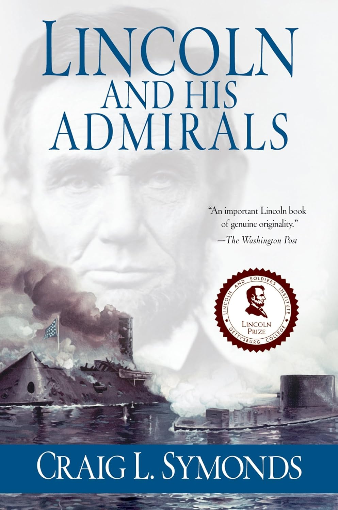

"Lincoln and His Admirals"

- Read on 2026-03-03
- Rating: ️️️️️
- Format: 🎧 (14 hours 44 minutes)
The US Civil War was not a naval war. The naval aspects largely weren't flashy. If you had to name prominent military leaders from the war, it's unlikely you'd name anybody in the Navy in the top 10, possibly 20. This book probably change that for a reader.
There are some things this book helped me appreciate more:
- The impact of the Anaconda Plan. The blockade of the Confederate states was more consequential than it often feels in land-focused narratives. Cutting the South off from foreign recognition, materiels, and markets significantly weakened its long-term prospects.
- Closing major Southern ports. New Orleans was largely won by way of the Navy. Regaining control of the Mississippi truly feels like the lynchpin of the Confederacy’s downfall. Add Mobile Bay and Fort Fisher to that list, and the cumulative effect becomes hard to ignore. (Just so much cotton.)
- Advances in joint operations. The Army and Navy were institutionally distinct, and coordinated action was not well practiced at the start of the war. The campaigns along the Mississippi show how much they evolved in working together.
- Lincoln's growth and curiosity. Other books mention his visits to the Washington Navy Yard, but this one explores them more fully. His youthful flatboat trips and mechanical curiosity (he remains the only U.S. president to hold a patent) seem to have contributed to his comfort with naval matters. Over time, he became one of the more naval-minded presidents of the 19th century.
- Ironclads and the future of naval warfare. The clash between the Monitor and Virginia (née Merrimack) was not decisive tactically, but it marked a turning point in naval history. Iron armor and the rotating turret ensured that fleets would never again be built the same way the world over.
While the book was interesting and informative, it wasn’t riveting. Still, it deepened my appreciation for a side of the war that is often overshadowed. I'm also glad to be taking a break from Civil War books for the rest of the year.
- Prior: For Cause and Comrades
- Next: Essentialism